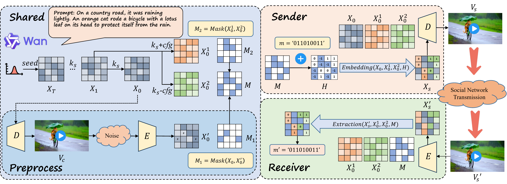

Robust Video Steganography via Multi-Mask Parameter Modulation in Deterministic Latent Diffusion Models
Abstract
Existing video steganography methods primarily embed secret information by modifying video content in the spatial or compressed domains. However, such methods are prone to distortion drift and are easily detected by steganalysis. Generative steganography, which avoids direct modification of the cover data, offers a promising alternative. Despite recent advances, most generative steganography studies focus on images and are difficult to extend to videos because of compression-induced distortions and the unique architecture of video generation models. To address these challenges, we propose LD-RoViS, a training-free and robust video steganography framework for the deterministic latent diffusion model. By modulating implicit conditional parameters during the diffusion process, LD-RoViS constructs a dedicated steganographic channel. Additionally, we introduce a novel multi-mask mechanism to mitigate errors caused by video compression and post-processing. The experimental results demonstrate that LD-RoViS can embed approximately 12,000 bits of data into a 5-second video with an extraction accuracy exceeding 99%.
Framework Diagram
Figure 1. The proposed LD-RoViS framework diagram. The framework encompasses the message embedding process at the sender and the message extraction process at the receiver, leveraging conditional parameter modulation within the latent diffusion model and a multi-mask mechanism to enhance robustness.
Video Demonstrations (Cover vs. Stego)
Side-by-side comparison of cover and stego videos across different scenes.
Scene A: "Underwater"
Cover Video
Stego Video
Scene B: "Human"
Cover Video
Stego Video
Scene C: "Wolf"
Cover Video
Stego Video
Scene D: "Flower"
Cover Video
Stego Video
LD-RoViS is a generative steganography method. The cover videos are presented here only for visual comparison. During the actual embedding process, no cover video is required for generation. These demonstrations show the high visual fidelity maintained by the stego videos, ensuring imperceptibility.
Main Performance Comparison
Comparison of steganography performance metrics (mean ± standard deviation).
| Method | PSNR (dB) | BRISQUE | acc (%) | Capacity (bits) |
|---|---|---|---|---|
| AQIM | 34.81 ± 0.44 | 32.87 ± 6.06 | 99.44 ± 0.27 | 10000 (fixed) |
| MEC_AQIM | 35.21 ± 0.47 | 32.71 ± 6.10 | 90.99 ± 5.90 | 10000 (fixed) |
| RoGVSN | -- | 49.53 ± 4.55 | 99.28 ± 0.38 | 729 (fixed) |
| LD-RoViS (Ours) | 41.66 ± 1.52 | 28.90 ± 6.05 | 99.17 ± 0.63 | 11983 ± 1446 |
This table compares our LD-RoViS framework ("Ours") against state-of-the-art steganography methods based on key metrics. PSNR and BRISQUE measure visual imperceptibility (higher PSNR and lower BRISQUE are better). acc is the message extraction accuracy (robustness), and Capacity is the amount of hidden data.
LD-RoViS achieves the highest visual quality (best PSNR and BRISQUE) and the largest embedding capacity (11983 ± 1446 bits) while maintaining a highly competitive extraction accuracy (99.17%), demonstrating its superior balance across imperceptibility, capacity, and robustness against distortions.
Contact Information
For any questions regarding this project and paper, please contact the authors:
General Inquiries: chenkj@ustc.edu.cn
Technical Questions: wangxiangkun@mail.ustc.edu.cn
Research Institution: University of Science and Technology of China